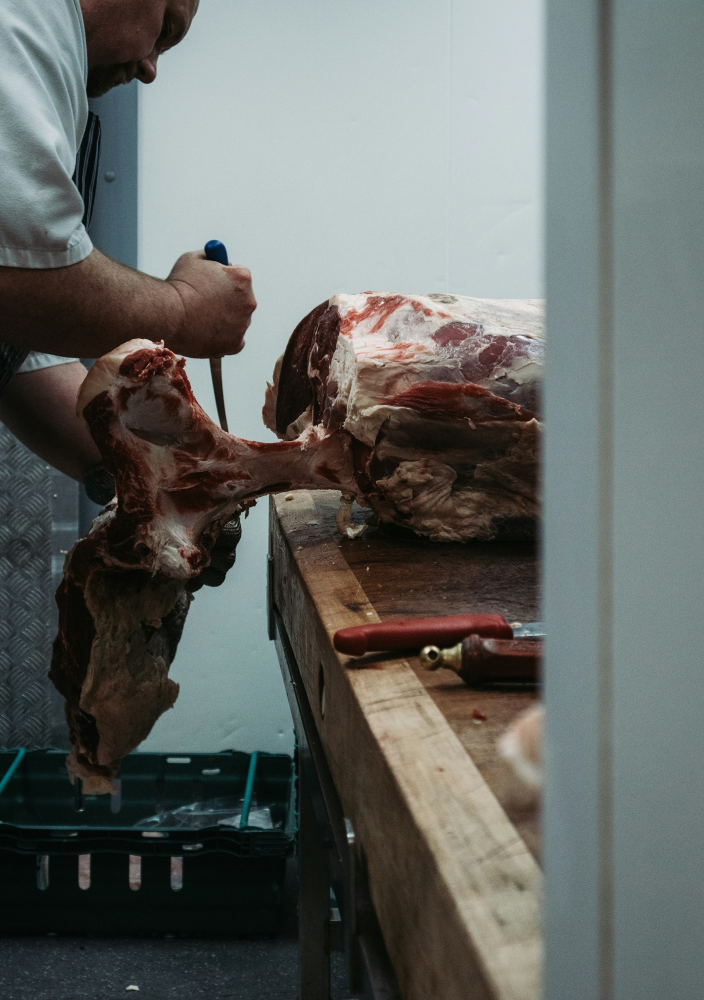

秋田牛で
世界に感動を
AKITA BEEF
About
「秋田牛とは？」
秋田の豊かで広大な自然とともに育まれる黒毛和牛で 「米の国秋田」の特徴を生かし、飼料に「お米」を与えています。 柔らかく旨味が強く、そして甘味ある脂身が口の中でほどけます。 生産者のたゆまぬ努力で育てられた「秋田牛」は全国から高い評価を受けています。
下記の基準を満たしたお肉だけが「秋田牛」として流通します
-
品種
黒毛和種

-
肉質
3等級以上
-
産地
最長飼養地が
秋田県
-
エサ
飼料用米を
一定量給与
Concept
SELECTION
SELECTION
厳選
熟練の職人による目利きにこだわることで
その日一番の牛を選び、一頭買いにて仕入れております。

TECHNIQUE
技術
絶妙の火入れと調理で
秋田牛の旨味を最大限に引き出します

INTERIOR
空間
カジュアルでスタイリッシュに
様々なシーンに合わせてお客様をおもてなし致します
News
- 2024.09.01
- 9月の定休日のお知らせ
定休日は4日、10日、15日、23日でございます。 - 2024.08.20
- 番組で紹介されました！
秋田市テレビ「秋田の特産品コーナー」で当店が出演！ - 2024.08.01
- 8月の定休日のお知らせ
定休日は3日、9日、16日、24日でございます。
Access
- 店名
- AKITA BEEF RESTAURANT
- アクセス
- 秋田県秋田市中通7丁目1
- TEL
- 018-000-000
- 営業時間
- 17:00～24:00
- （L.O 23:00）